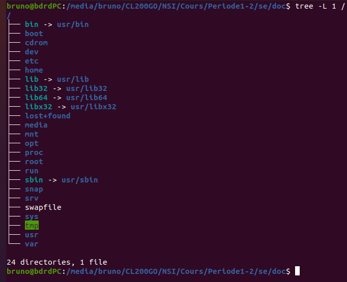

CHAP. I: SYSTEME D'EXPLOITATION - Le cours⚓︎
| Contenu | Capacités attendues | Commentaires |
|---|---|---|
| Systèmes d’exploitation | Identifier les fonctions d’un système d’exploitation. Utiliser les commandes de base en ligne de commande. Gérer les droits et permissions d’accès aux fichiers. | Les différences entre systèmes d’exploitation libres et propriétaires sont évoquées. Les élèves utilisent un système d’exploitation libre. Il ne s’agit pas d’une étude théorique des systèmes d’exploitation. |
| Événements clés de l’histoire de l’informatique | Situer dans le temps les principaux événements de l’histoire de l’informatique et leurs protagonistes. |
Quel est le rôle d'un système d'exploitation?⚓︎
Le système d'exploitation permet:
- l'exécution des applications;
- le partage des ressources entre les utilisateurs, les programmes;
-
la gestion:
- des périphériques;
- des fichiers;
- des erreurs;
- des performances.
Les différents types de système d'exploitation⚓︎
On distingue deux grandes familles de système d'exploitation:
- les dérivés d'UNIX (GNU/Linux, BSD, iOS, MacOS, Android, etc.);
- les systèmes Microsoft Windows.
Certains sont libres (c-à-d ne nécessitant pas le paiement d'une licence d'utilisation, code source disponible, entre autres), d'autres non (on les qualifie de systèmes propriétaires).
Conformément au programme, on utilisera un système d'exploitation libre en NSI: GNU/Linux, créé par Linus Torvalds
.jpg#/media/Fichier:LinuxCon_Europe_Linus_Torvalds_03_(cropped).jpg)
Par Krd (photo)Von Sprat (crop/extraction) — File:LinuxCon Europe Linus Torvalds 03.jpg, CC BY-SA 4.0, Lien
{kind=link}
L'interaction avec le système d'exploitation peut se faire de deux manières:
- par le biais d'une interface graphique (GUI: Graphical User Interface);
- par le biais d'une interface en ligne de commande (CLI: Command Line Interface).
On privilégiera ici l'utilisation de la ligne de commande.
Découvrir la ligne de commande⚓︎
Un interpréteur de commande : Bash ou shell Bash⚓︎
On a accès à la ligne de commande en ouvrant un terminal avec le raccourci clavier Ctrl＋Alt＋T . Il s'agit d'un programme appelé Bash qui est présent par défaut sur la majorité des sytèmes UNIX.
Les commandes de base⚓︎
Une fois le terminal démarré, chaque utilisateur se trouve par défaut dans son dossier personnel (en anglais home directory ou plus simplement HOME) et le shell Bash est en attente de commande en affichant une série d'informations: nom_utilisateur@nom_machine:~$

Le caractère ~ (prononcez tilde, touche AltGr＋2) correspond au chemin du répertoire personnel de l'utilisateur. Le caractère $ signifie que l'on a affaire à un utilisateur normal c-à-d avec des droits limités.
Toutes les commandes acceptent de nombreuses options. Pour avoir un inventaire complet des options on doit taper: man xxx où xxx est la commande.
Quelques commandes à connaître (liste non exhaustive)
| Commande | Description |
|---|---|
| ls | lister le contenu du dossier courant |
| mkdir | créer un dossier |
| cd | se déplacer dans un dossier |
| cp | copier des fichiers ou dossiers |
| rm | supprimer des fichiers ou dossiers |
| cat | afficher le contenu d'un fichier |
| touch | crée un fichier vide |
| clear | efface l'écran |
Aborescence d'un système Linux⚓︎
Les dossiers du systèmes sont organisés selon une arborescence dont la racine est /.

Un utilisateur normal n'a pas les droits suffisants pour écrire dans les dossiers systèmes ou y effacer des fichiers. Seul le superutilisateur nommé root peut tout faire (et même détruire le système) et n'importe où !
Les changements de dossier se font naturellement avec la commande cd qui peut prendre comme paramètre:
- un chemin absolu, c-à-d complètement qualifié depuis racine
/(par exemple/home/bruno/Documents); - un chemin relatif, c-à-d par rapport au dossier où on se trouve qui est noté avec le raccourci
.(point); le dossier parent est noté avec le raccourci..(point point). Ainsi, si on est dans/home/bruno/Documentset qu'on veut se rendre dans/home/bruno/Téléchargementson tapera:
1 | |
Gestion des droits⚓︎
Qui peut faire quoi et où ? Pour répondre à cette question, les environnements UNIX divisent le monde en trois parties:
- le propriétaire ou utilisateur (user);
- le groupe auquel appartient l'utilisateur (group);
- les autres (others).
Par ailleurs, les fichiers peuvent être manipulés en:
- lecture (read);
- écriture (write);
- exécution (execute).
Considérons la sortie de la commande ls -l sur un répertoire donné.

Les colonnes n° 1, 3 et 4 sont utiles à la gestion des droits.
- La colonne 3 indique le nom du propriétaire;
- la colonne 4 indique le nom du groupe;
- la colonne 1 qui contient 10 caractères doit être décomposé en quatre parties. Par exemple
-rwx r-- r--(attention il n'y a pas d'espaces en réalité, ils ont été rajoutés ici pour une meilleure lisibilité) !
Les indications de la 1re colonne peuvent être interprétées de la manière suivante:
- le 1er caractère: un
-correspond à un fichier et undà un répertoire; - un groupe de 3 caractères associés aux droits du propriétaire;
- un groupe de 3 caractères associés aux droits du groupe;
- un groupe de 3 caractères associés aux droits des autres;
Dans l'exemple de la capture ci-dessus, Saison1 est un fichier ordinaire dont le propriétaire est Angie qui dispose des droits en lecture et écriture alors que le groupe enfants et les autres n'ont que le droit en lecture.
Un x signifie droit de traverser pour un répertoire.
Enfin, seuls le propriétaire ou bien root peuvent changer les droits sur un fichier ou répertoire. La commande chmod est prévue à cet effet. Voir des exemples de syntaxe dans le tableau ci-dessous.
| Accorder les droits de: | Syntaxe |
|---|---|
| lecture au groupe | chmod g+r fichier |
| écriture au propriétaire | chmod u+w fichier |
| exécution aux autres | chmod o+x fichier |
| exécution à tous | chmod ugo+r fichier |
Remarque
Pour supprimer un droit, on utilise le signe -; par exemple, pour supprimer le droit d'écriture au groupe sur un fichier, on utilisera la commande chmod g-w fichier